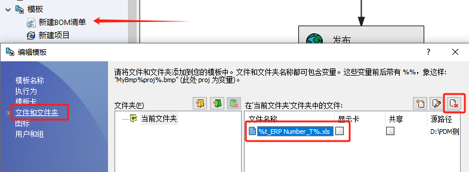
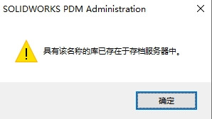
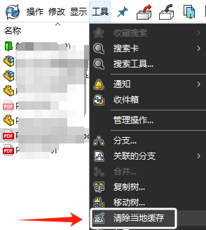

PDM-Q&A
数据库连接问题
网络
服务器数据库连接问题
端口
防火墙设置
SQL
服务器IP/TCP设置
服务器
没能删除工作流程
工作流程包含文件，所以不能删除

输出无法找到文件
这是因为在【模板】内，存在有预定义的文件生成模板。当该文件没在库内时，输出PDM配置文件就会提示：PDM输出无法找到文件

找到【模板】内的设置，找到预设文件。可以选择删除。或者在PDM库文件夹内新建该文件。之后再操作PDM输出
0
具有该名称的库已存在于存档服务器中
客户端
材料明细表最新项
Q材料明细表是否能默认显示最新项
A用户设置
路径显示问题
Win11 PDM路径失效问题

A：是特定版本和Win11的兼容问题
默认材料明细表
是否能设置默认使用某个明细表（而不是第一个）
查看工作流程
A可以在文件【属性】内可以看到。
<本地文件>
文件夹或文件以灰色显示表示其为<本地文件>，是不存在数据库的文件。有几个原因可能会导致您看到这些本地文件或文件夹。它们的出现通常是正常的：
1、您登录到拥有更多访问权限的其他用户以前缓存文件的库视图，但当前用户对文件夹或文件没有读取权限。以前缓存的对象仍将在视图中。
2、文件夹或文件已被删除、重命名或移动，而以前缓存的副本保留。
3、文件由应用程序添加到本地视图，但未添加到库本身。因此，它们仅在本地存在。（请注意，有些文件应在本地保留，如由应用程序创建的临时文件）。
清除本地文件：
使用“清除本地缓存”命令或移除对话框中的本地副本（请注意，这只会处理库的部分文件，不会移除本地文件夹）。
隐藏：
右键单击管理工具中的“用户”，选择“设置”>“资源管理器”选项卡，然后启用“只显示属于文件库一部分的文件”。

警告
组属性 - 警告选项卡
受影响的操作： 更改状态
受影响的操作： 检入
受影响的操作： 检出
受影响的操作： 设置修订版
组属性 - 警告选项卡 - 2020 - SOLIDWORKS PDM 帮助
Windows 11 在2023年9月WIN更新 KB5030509后出现。
2024 SP1已修复
2024 SP0/2023 SP5/2022SP5 的补丁参考 QA00000308431
日志错误
1
Msg=[Microsoft][ODBC SQL Server Driver][SQL Server] DELETE语句与REFERENCE约束”FK_GroupProjectNotification_Notifications”冲突。冲突发生在数据库“vaultdb”，表“dbo”。“GroupProjectNotification”，列“NotificationID”。
其他
CRP文件丢失怎么办?
PDM报告原CRP文件丢失怎么办?